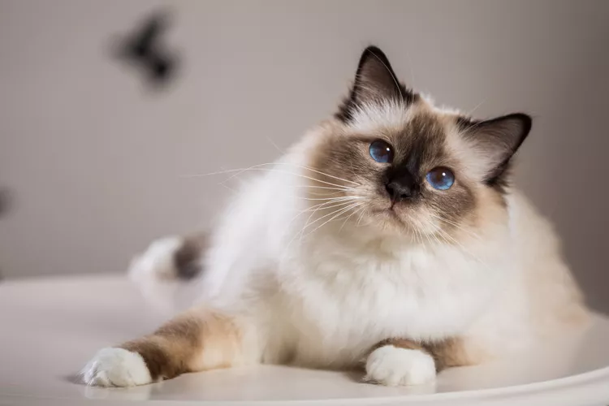
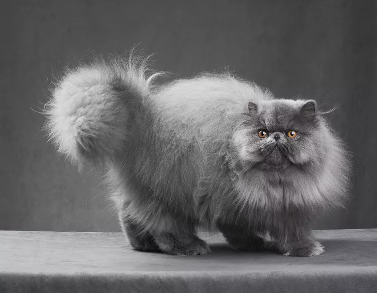

₍⸍⸌̣ʷ̣̫⸍̣⸌₎Cat Breeds ก₍⸍⸌̣ʷ̣̫⸍̣⸌₎ค
|
Image |
Breed |
Description |
|  |
Birman |
The medium-sized Birman cat has long, silky hair. With a light-colored body and darker "points" of color on the face, ears, legs, and tail, the Birman is described as being color pointed. The points are available in a wide range of colors, such as seal, blue, lilac, chocolate, and red. They can be be solid or have a light tortoiseshell or tabby patterning. All Birman cats, regardless of color, should have four white paws and blue eyes. The origins of the Birman cat breed are unknown, however it's possible that they came from Burma, where they may have been revered. The Birman of today is valued as a kind and kind friend. |
|  |
Persian Cat |
The Persian cat, whose history may be traced back to the deserts of Persia and Iran, has been revered for hundreds, if not thousands, of years. The Persian cat is currently the most widely-owned purebred cat breed in the United States. The Persian breed of cat ranges in size from medium to giant. A pansy-shaped, round, flat face and a thick, long coat are the distinguishing features of the Persian cat. Nearly every color and pattern imaginable is available for the coat, including solid hues, silver and golden hues, smoky and shaded hues, tabby patterns, particolors and bicolors, and pointed. |
 |
Japanese Bobtail Cat |
The medium-sized Birman cat has long, silky hair. With a light-colored body and darker "points" of color on the face, ears, legs, and tail, the Birman is described as being color pointed. The points are available in a wide range of colors, such as seal, blue, lilac, chocolate, and red. They can be be solid or have a light tortoiseshell or tabby patterning. All Birman cats, regardless of color, should have four white paws and blue eyes. The origins of the Birman cat breed are unknown, however it's possible that they came from Burma, where they may have been revered. The Birman of today is valued as a kind and kind friend. |